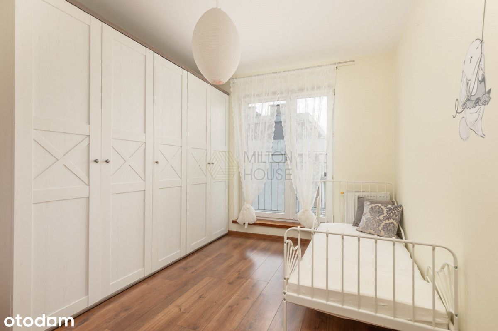

Przestronne, dwupoziomowe mieszkanie z tarasem
ul. Skrajna, Ząbki undefined
1 100 000 PLN
146.94 m2
5 pokoje
3 piętro
Na sprzedaż wyjątkowe, 2-poziomowe mieszkanie o powierzchni 146m2. Jest to idealna propozycja dla rodzin poszukujących przestronnego i komfortowego miejsca do życia.
Mieszkanie znajduje się na 3 piętrze w bloku z 2008 r. na zamkniętym, ogrodzonym, strzeżonym osiedlu z placem zabaw. Oprócz parkingu w garażu podziemnym, do dyspozycji są ogólnodostępne miejsca na terenie osiedla.
Główne atuty nieruchomości:
- Ciche, kameralne osiedle otoczone zielenią
- Piękny widok z 3 piętra
- Wysoka jakoś wykończenia, drewniana bambusowa podłogowa w salonie
- Dwustronne mieszkanie, ekspozycja wschód - zachód
- Mieszkanie wyposażone, oraz umeblowane, gotowe do wprowadzenia
- Miejsce parkingowe w garażu podziemnym
- Wyjątkowo dużo przestrzeni do życia dla całej rodziny
Rozkład mieszkania
Poziom I:
- Główna sypialnia (28m2) z wyjściem na balkon
- Pokój (12m2) - szafa, komoda
- Pokój (10m2) - duża szafa
- Pokój (10m2)
- Łazienka (6m2)
- Pomieszczenie gospodarcze
- Przedpokój (15m2)
Poziom II:
- Salon z jadalnią (46m2)
- Hol (4,5m2)
- Kuchnia (13m2)
- Taras (22m2 )
Okolica:
Mieszkanie zlokalizowane jest w cichej, spokojnej i zielonej okolicy. W pobliżu znajdują się liczne sklepy: Kaufland, Lidl, Biedronka, Rossmann, Empic, Pepco, restauracja Na Skrajnej, żłobki, przedszkole, oraz szkoła podstawowa.
Osiedle otoczone jest zielenią, spacerem można dojść do Zalewu Bardowskiego, a do Warszawy dojedziemy w kilkanaście minut.
Miejsce parkingowe w garażu podziemnym płatne dodatkowo 30tys. W pełni uregulowany stan prawny, założona księga wieczysta bez obciążeń, istnieje możliwość zakupu mieszkania na kredyt. Nasi doradcy bezpłatnie mogą dobrać dla Państwa najkorzystniejszą ofertę na rynku.
Zapraszam do kontaktu, oraz na prezentację.
---
Продається виняткова 2-рівнева квартира площею 146 м2. Це ідеальна пропозиція для сімей, які шукають просторе і комфортне житло.
Квартира розташована на 3-му поверсі в багатоквартирному будинку 2008 року на закритій, огородженій території з дитячим майданчиком, що охороняється. Крім паркування в підземному гаражі, на території комплексу є місця загального користування.
Основні переваги нерухомості:
- Тихий, затишний маєток, оточений зеленню
- Прекрасний вид з 3-го поверху
- Висока якість обробки, дерев'яна бамбукова підлога у вітальні
- Двостороння квартира, експозиція зі сходу на захід
- Квартира обладнана та мебльована, готова до заселення
- Місце для паркування в підземному гаражі
- Виключно великий житловий простір для всієї родини
Планування квартири
Рівень I:
- Головна спальня (28м2) з виходом на балкон
- Кімната (12м2) - шафа, комод
- Кімната (10м2) - велика шафа
- Кімната (10м2)
- Ванна кімната (6м2)
- Підсобне приміщення
- Передпокій (15м2)
Рівень II:
- Вітальня з їдальнею (46м2)
- Передпокій (4,5м2)
- Кухня (13м2)
- Тераса (22м2)
Оточення:
Квартира розташована в тихому, спокійному і зеленому районі. В околицях є численні магазини: Kaufland, Lidl, Biedronka, Rossmann, Empic, Pepco, ресторан Na Skrajnej, ясла, дитячий садок та початкова школа.
Маєток оточений зеленню, до Бардовського водосховища можна дійти пішки, а до Варшави можна дістатися за кілька хвилин.
Паркувальне місце в підземному гаражі оплачується додатково 30тис. Повністю врегульований правовий статус, оформлена земельна та іпотечна книга без будь-яких обтяжень, є можливість купівлі квартири в кредит. Наші консультанти безкоштовно підберуть для вас найвигіднішу пропозицію на ринку.
Запрошую Вас до нас на презентацію.
